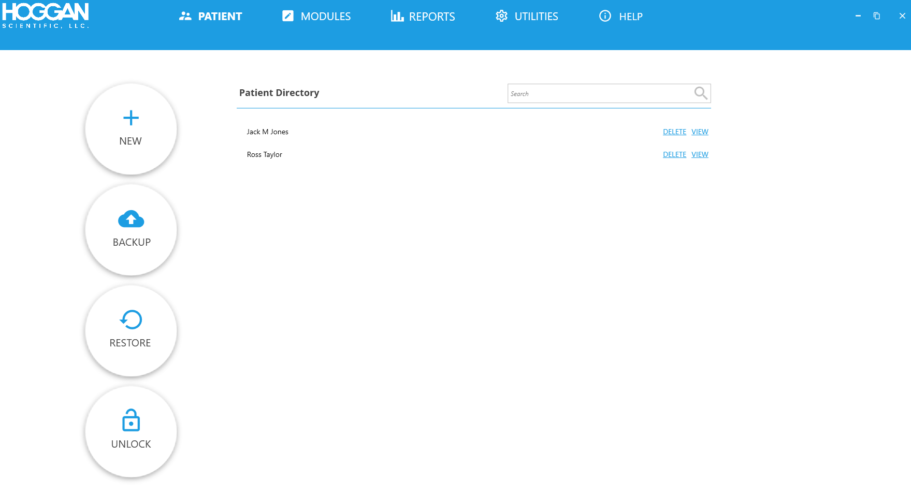
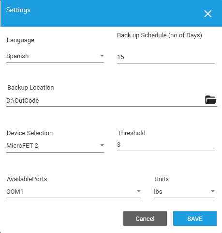

Main Screen help
How to use main screen
Top of Screen has Menu: PATIENT, MODULES, REPORTS, UTILITIES, HELP.
PATIENT – Lists commands as relates to patient information
MODULES – Lists commands of test modules for use with purchased device(s).
REPORTS – Report menu has no submenu of commands. Opens to REPORTS screen.
UTILITIES – Utilities menu has no submenu of commands. Opens to UTILITIES screen for initial setup of parameters for use of application.
HELP – Provides list of sections of software, topics on which you can get help information
In main screen upon opening application is default – PATIENT, from menu. PATIENT commands are displayed: NEW, BACKUP, RESTORE, UNLOCK
Settings
Settings: Settings window has parameters for initial set up after software installation, and when parameter settings need to be changed. After select parameters for initial set up or when updating click SAVE button to save your selections.